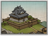

Basic Unit Statistics (can be modified by difficulty level, arts, skills, traits and retainers)
| Recruitment Cost | 300 | |
| Upkeep Cost | 100 | |
| Melee Attack | 1 | 2% |
| Charge Bonus | 1 | 2% |
| Bonus vs Cavalry | 0 | 0% |
| Range | 100 | 15% |
| Accuracy | 10 | 10% |
| Reloading Skill | 5 | 5% |
| Ammunition | 15 | 18% |
| Melee Defence | 1 | 2% |
| Armour | 1 | 6% |
| Morale | 5 | 10% |
Strengths & Weaknesses
- Good range but shorter than bow units.
- Devastating damage.
- Low accuracy, reload rate and morale.
- Very vulnerable to cavalry and in melee.
Abilities
- Bamboo Wall - A large wall that can be erected during the deployment phase. It blocks the movement of enemies and protects against cavalry charges.
- Fire by Rank - Will fire by rank from front to rear, each rank kneeling to reload and allowing those behind a clear field of fire.
Requires
- Buildings: 
- Arts:

- Religions:

Description
These ashigaru troops are armed with matchlock arquebuses and pepper the enemy with long range, mass volleys.
The role of matchlock ashigaru is to unleash massed gun volleys upon the enemy, keeping them confused and, in the process, weakening them enough for a frontline charge. Once fired, the matchlock guns take a long time to reload, but their range, noise, and effect on enemy morale more than compensates for this lack of speed. The smoke and fire they produce can be very disorientating to enemies, particularly when targets are dropping all around. When the main fighting starts matchlock gunners should retreat behind melee troops. They do not have the training to fight in close combat and have no defence against a cavalry charge. Historically, it was considered a great honour for any samurai to fire the first shot of a battle. The honour traditionally fell to the samurai archers, who opened most battles with an archery duel. However, the Sengoku Jidai introduced the European arquebus, guns which required much less skill to use than the bow. The archery duel became an exchange of gunfire and, as the guns were largely carried by ashigaru, the first shots were now fired by simple foot soldiers. The ashigaru gunners were led by a teppo ko gashira, a man chosen for his skill and courage, who ordered when to load, when to fire and signalled his superiors when the enemy had been weakened enough for a charge to be attempted.